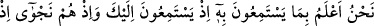
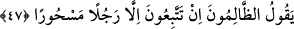

46. Ayrıca, onu anlamamaları için kalplerine bir kapalılık ve kulaklarına bir
ağırlık veririz. Sen, Kur’an’da Rabbinin birliğini andığın zaman onlar, canları
sıkılmış bir vaziyette gerisin geri dönüp giderler.
“Ayrıca, onu anlamamaları için” Kur’ân’ı künhü üzere anlamalarını ve onun Allah
katından olduğunu bilmelerini istemeyerek “kalplerine bir kapalılık” birçok örtüler
veririz.
Bu âyet, onların kalblerinin haktan uzaklaştıklarını ve hakkı kabul edip inanmaktan
nefret ettiklerini gösteren bir benzetmedir. Sanki onların kalbleri, hakla kalbleri arasına
girmiş ve hakkın kalblerine nüfûzunu engelleyen kılıf ve örtüler içindedir. Nitekim
Bahru’l-ulûm’da böyle geçmektedir.
Fakir (Bursevî) der ki: İşte bu haktan uzaklaşma ve nefret etme, mânevî perdelerin
kalb ve aslî fıtrat üzerinde birikmesi, yoğunlaşması sebebiyledir. Her ne kadar aslî fıtrat
anlamayı, idrâki ve ilmin nûruna çıkmayı gerektirse de bu perdelerin karanlıkları buna
mânîdir. Bu söz her ne kadar temsil olarak zikredilmişse de işin kendisi de gerçekten
böyledir.
“Ve kulaklarına bir ağırlık veririz.” Yâni hakkı duymaya engel olan bir sağırlık ve
ağırlık koyarız. Bu da onların hakkı işitmek ve ona kulak vermekten nefret etmelerini
anlatmak için bir temsildir. Sanki onların kulaklarında hakkı duymaya mânî bir sağırlık
vardır. Kur’an lafzı ve mânâsı bakımından mûcize olduğu için inkârcıların Kur’ân’ın
mânâlarını hakkıyla anlamalarına ve lafızlarını da hakkıyla idrâk etmelerine mânî olan
şeyin ne olduğunu isbat etmiş, göstermiştir.
“Sen, Kur’an’da Rabbinin birliğini andığın zaman” yalnızca Allah’ı anıp onların
ilahlarından bahsetmediğin zaman, yâni Lâ ilâhe illallah dediğin zaman “onlar,”
kâfirler “canları sıkılmış bir vaziyette gerisin geri dönüp giderler.” Yâni o nefret
etmiş bir halde yüz çevirir ve dönüp kaçarlar.
47. Biz, onların seni dinlerken ne maksatla dinlediklerini, kendi aralarında
fısıldaşırlarken de o zâlimlerin: “Siz, büyülenmiş bir adamdan başkasına
uymuyorsunuz!” dediklerini çok iyi biliriz.
“Biz, onların seni dinlerken ne maksatla dinlediklerini,” Onların Kur’ân’ı boş
sözlerle karıştırdıklarını, Kur’ân’ı ve seni hafife alıp alay ettiklerini gâyet iyi biliriz.
Rivâyet edildiğine göre Hz. Peygamber (s.a.) Kur’an okuduğu zaman sağına ve soluna
Abdüddâr kabilesinden iki kişi dikilir, ellerini çırparak ses çıkarır, ıslık çalarak ve
yüksek sesle şiir okuyarak Kur’ân’ın işitilmesine mâni olurlardı.
Biz zikredilen ve hiçbir hayır getirmeyen şeylerle Kur’ân’ı karıştırmayı isteyerek
dinleyen kimseyi çok iyi biliriz. Ayrıca “kendi aralarında fısıldaşırlarken de o